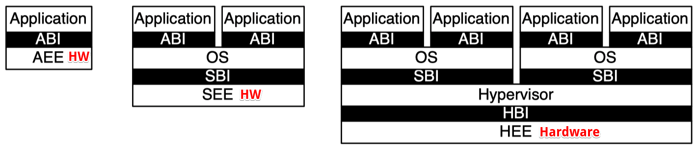
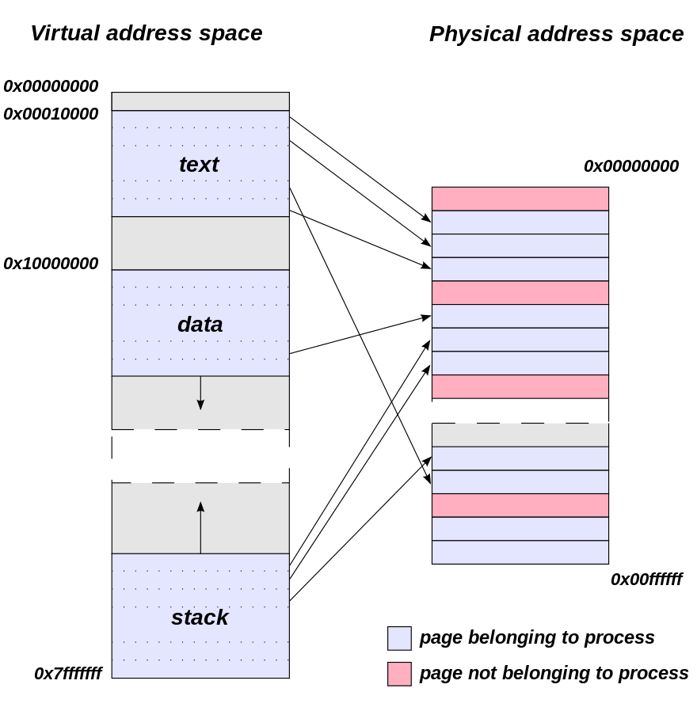
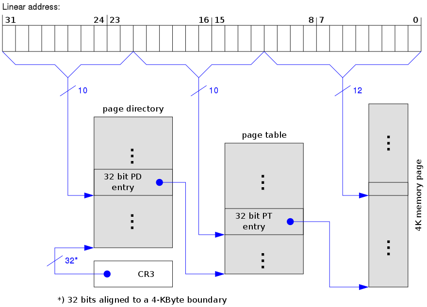
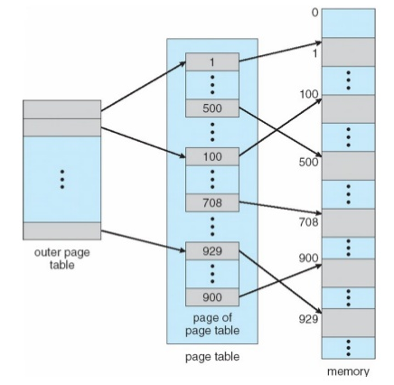
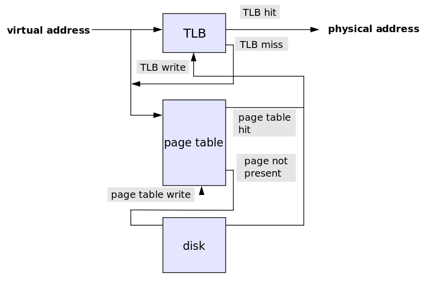
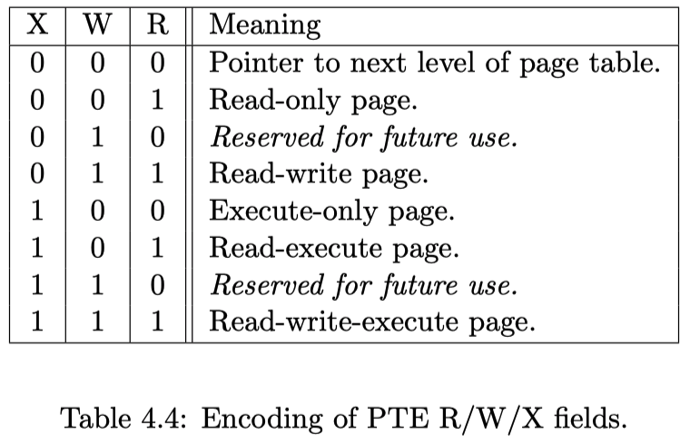
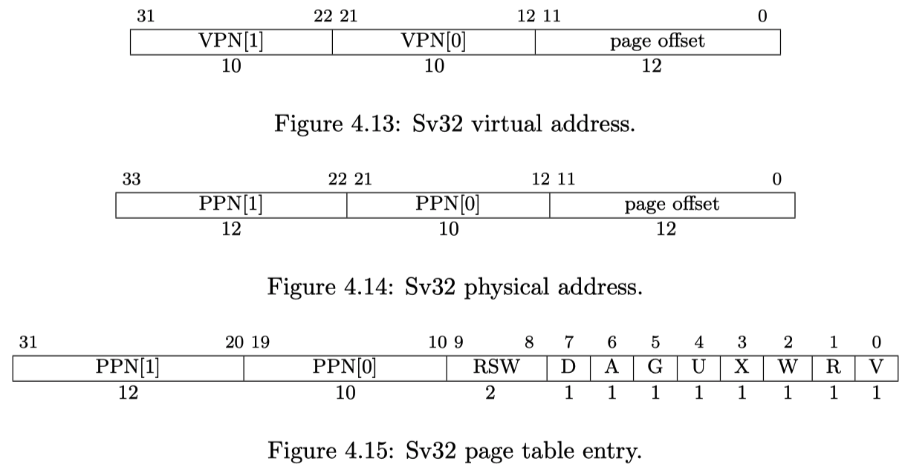
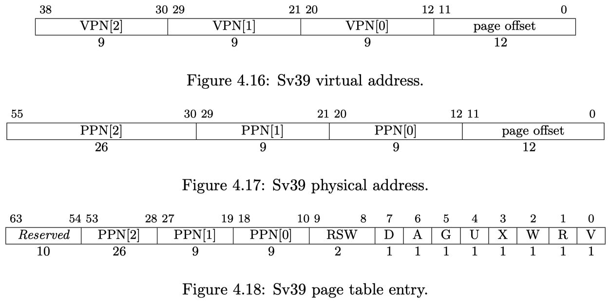
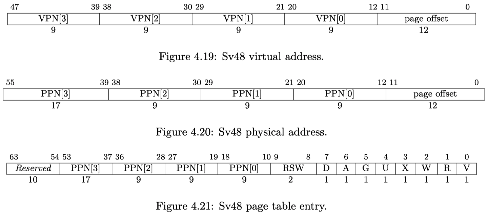
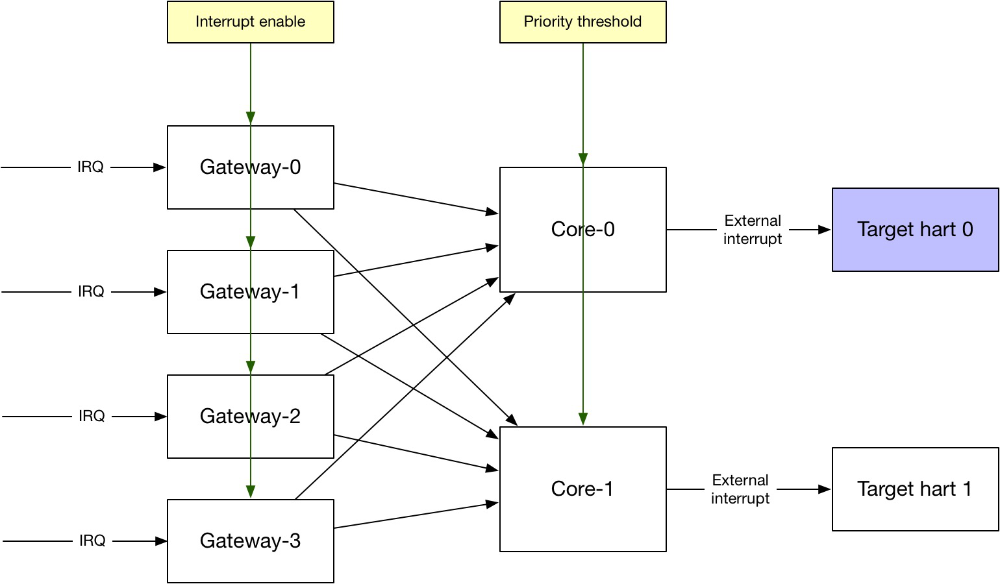

[RISC-V Architecture Training] Privileged Architecture
Privileged architecture
Purpose of privileged architecture
-
To manage and protect shared resources
- Memory, IO devices, even cores
-
Also needs to decouple implementation details
- Handle unimplemented operations: software emulation
- Handle async events (interrupts): IO, timer, software
- Hypervisor support: 2-level address translation
Therefore, we have
- 4 privilege modes: U, S, H, M
- PMP/PMA (physical memory protection/attributes)
- Virtual memory
- Interrupts and exceptions
- And a bunch of CSRs to serve these functionality
Privileged architecture / software stack layers
4 different kinds of platforms
| Platforms | Modes | Trust | Memory protection |
|---|---|---|---|
| Embedded w/o protection (most MCUs) | M | All | Non |
| Embedded w/ protection (RTOS scenario) | M+U | Application | Physical memory protection |
| OS capable (Linux, and etc.) | M+S+U | OS | Virtual memory |
| Cloud OS capable (multiple OS running on the same hardware) | M+H+S+U | Hypervisor | 2 level of virtual memory |
Privileged architecture / software stack layers

| Hardware | Interface | |
|---|---|---|
| Bare-metal application | AEE (application exe env) | ABI (application binary i/f) |
| Operation system | SEE (supervisor exe env) | SBI (system binary i/f) |
| Hypervisor w/ mutliple OS | HEE (hypervisor exe env) | HBI (hypervisor binary i/f) |
The interface is ECALL instruction
Generates ECALL exception and traps into supporting execution enviroment
Privilege modes
4 privilege modes (from low to high)
- U: user mode for application
- S: supervisor mode for operating system
- H: hypervisor mode for virtualization
- M: machine mode
Debug (non-functional mode) is slightly higher than machine model, but need physical debugger connected and enabled.
- Each privileged mode has its own CSRs and instructions
- CSRs can only be accessed by higher/equal levels of modes
- Access permission violation will throw exception
- Mode specific instructions
ECALL: transition between software layer, and privilege modesxRET: return to previous layer and modeMRET,SRET
SFENCE.VMA: supervisor mode only. Clear TLB after change the page table in memoryWFI: machine mode only. Stall current hart until an interrupt, super useful for low power application
Privilege modes / M (machine)
- The highest / only-mandatory privilege mode
- The level that has directly access hardware, right after reset
Machine mode CSRs
misa: because RISC-V is a family of ISAs, every implementation has its own supported ISA subsets.misacontains the ISA subsets current hart supportsmstatus: an aggregation of operating states- Global interrupt enable, and interrupt stack. And others …
- And a bunch of CSRs for trap handling
mtvec,medelegandmideleg,mipandmie,mtimeandmtimecmp,mscratchandmtval,mepcandmcause- More details will be discussed in later section.
.footnote[Note: Other privilege modes have similar CSRs, some of them are just a shadow of M-mode CSRs which are read-only in lower privilege modes.]
Virtual memory
What?
- Abstraction of actual memory resource to create the illusion of owning a dedicated/large memory for each application/process.
Why?
- Decouple: e.g. 2GiB physical memory shared by OS and hundreds of processes.
- Security: e.g. isolate memories from process to process

How?
- Address translation by MMU (memory management unit)
- Obviously cannot do 1-to-1 translation, too many entries
- Paged virtual memory
- Divide virtual address space into pages, e.g. 4KiB
- Still cannot do 1-to-1 translation, too many entries (4GiB/4KiB = 1Mi)
- Levels of page tables
- Example of 3-level page tables

Virtual memory / RISC-V
- Finest granularity of page size if 4KiB
- Last level of page table
- PTE (page-table entry) contains
- Physical address
- Permission bits
- Page status (accessed / dirty)
- Hardware PTW (page-table walker)
- PTW is mechanism to go through the page tables to find target virtual address's physical address
- Software TLB (translation lookaside buffer) refill
- TLB is a cache of PTE close to pipeline for faster translation
- Otherwise, every memory access becomes at least 4 memory accesses
- TLB is a cache of PTE close to pipeline for faster translation

- Support ASID (address space ID)
- Reduce context switch cost when different processes running on the same hart
- Multi-level page tables
- 2-level for SV32; 3-level for SV64
- Super-page: stop before reaching to the last level leaf
- Much larger size of page size
- Less missing rate in TLB
TLB flush instruction SFENCE.VMA
- When page tables are updated in memory, need to flush current TLB entries for update
- But only affects local hart, so if to sync with other hards, IPI (inter-process interrupt) is needed
Virtual memory / address translation
Look up TLB
- TLB is just like cache. Its miss will trigger page table walker
- Small system use full-associated design with less entries
- Large system use way-associated design with more entries
Page table walker
- Hardware PTW: simple FSM that reads memory
- Software PTW: more latency/power
- Page fault exception: page is in external storage, or not allocated
Software MMU
- Allocate new page, or read in page from external storage
- Page replacement if physical memory is full (next slide)

Virtual memory / page replacement
- Physical memory is not unlimited, when it's full, old page needs to be swapped out to external storage
- In RISC-V page replacement is managed by software
- When a page is used but its not currently in physical memory, raise “page fault exception” to involve software
- Hardware support is the
accessedanddirtybits in each PTE (page table entry) - Recently non-accessed pages will be freed
- Dirty pages will be written out to external storage
Virtual memory / protection
- Every PTE has 3 bits of permission field

Virtual memory / SV32

Virtual memory / SV39

Virtual memory / SV48

PMP (physical memory protection)
Why?
- If without full featured OS, virtual memory is not efficient.
- Embedded systems, with RTOS (real-time OS), still need memory protection to isolate user application from accessing kernel space
PMP: add R/W/X permissions to PMP regions
- By default, S/U mode doesn't have permission
- Num of regions is up to 16, aligned to 2^N
- Higher priority than virtual memory protection
- PMP checks happen after VMP (virtual memory protection) checks
- Useful for untrusted S-mode
PMA (physical memory attributes)
Attributes of physical memory regions
- Cacheable or non-cacheable
- Ordering allowed
- Atomic access allowed
- Mode allowed
- Access widths allowed
- Alignment restriction
- …
Attributes can be programmable
.footnote[Note: RocketChip doesn't support PMA]
Interrupt and exception
Difference?
- Interrupt is async, exception is sync
- Sync means tied to specific instruction execution
Interrupt types
- Software
- Initiator is another hart/processor
- Timer
- For timely scheduled tasks
- External
- Peripheral devices, e.g. DMA
Exception types
- Instruction address misaligned
- Instruction access fault
- Illegal instruction
- Breakpoint
- Load address misaligned
- Load access fault
- Store/AMO address misaligned
- Store/AMO access fault
- Environment call from U/S/M-mode
- Instruction page fault
- Load page fault
- Store/AMO page fault
Interrupt and exceptions / exception
Misalignment
- Whether misaligned load/store will trigger exception depends on implemenation.
- Instruction misalignment
Enviroment call
ECALLtriggers an exception to change privilege modes
Interrupt and exceptions / related CSRs
Where to trap
xTVEC: entrance address of trap- 2 modes: direct (BASE) or vectored (trap to BASE+4xcause)
Mode to trap into
xI/EDELEG: trap deligation registers- By default, trap into machine mode, but use deligation registers, other modes can be delegated for certain types of trap
Reason to trap
xCAUSE: the cause of trapxTVAL: trap value written by hardware- Contain more information about the exception
How to return from trap
xEPC:PC before trap handler (in order to resume after trap handler)xSTATUS: it holds the previous privilege modexPPand global previous interrupt enablexPIE
Interrupt enable
xSTATUS: global interrupt enablexIE: interrupt enable for each modes and types- Exception cannot be disabled
Interrupt and exceptions / interrupt controller
PLIC (platform level interrupt controller)
- External interrupt aggregator
CLINT (core local interruptor)
- Provide timer and software interrupt memory-mapped CSRs
Both PLIC and CLINT will be covered in later section

Summary
Purpose of privileged arch
- Manage resource
- Decouple implementation details
4 privilege modes
- U, S, (H), M
Memory
- Virtual memory
- PMP & PMA
Exception
- Precise exceptions
- Cause mode changing
Interrupt
- Non-precise interrupt
- 3 types: external, timer, software
- PLIC (platform-level interrupt controller)